Training data for cameras mounted above the street
Detectors on traffic poles and building facades look down at dense, heavily occluded scenes that driving datasets rarely cover, and labeling that footage by hand is slow and inconsistent. Boundless generates it instead. It is built on the Unreal Engine 5 City Sample, places cameras where a city would mount them, changes lighting, weather and traffic between shots, and computes every label from the simulation state.
over detectors trained on CARLA-generated data, evaluated on real imagery from medium-altitude cameras.
One camera, a new scene every round
Collection runs site by site. At each intersection Boundless places up to sixteen cameras and captures them over several rounds. Every round draws a new sun position, sky, exposure and weather, and re-spawns moving traffic, parked vehicles and pedestrians at new densities, so no viewpoint is captured twice with the same scene. A capture starts only after every agent in view has finished loading.
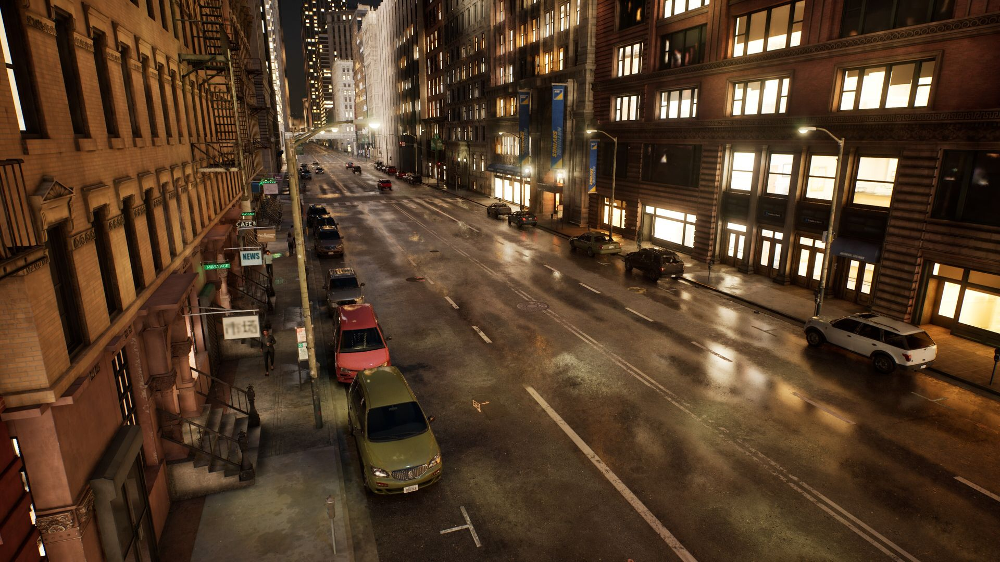
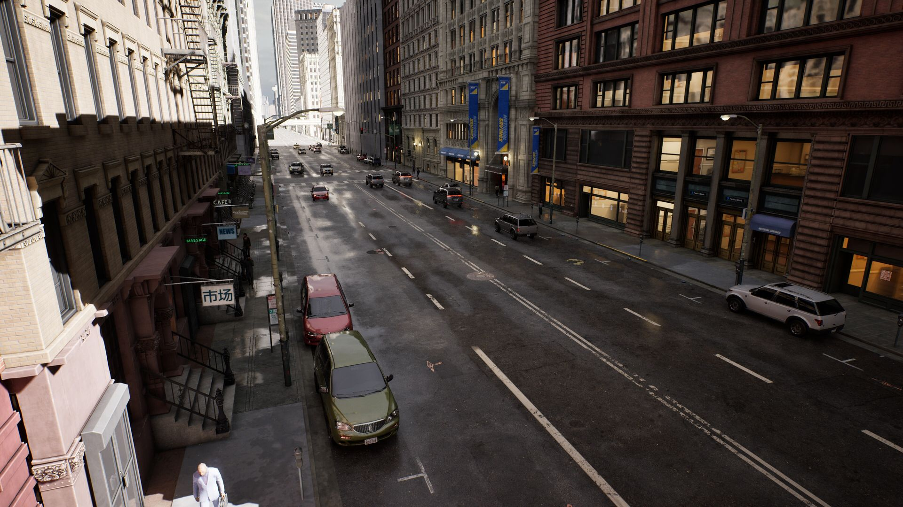
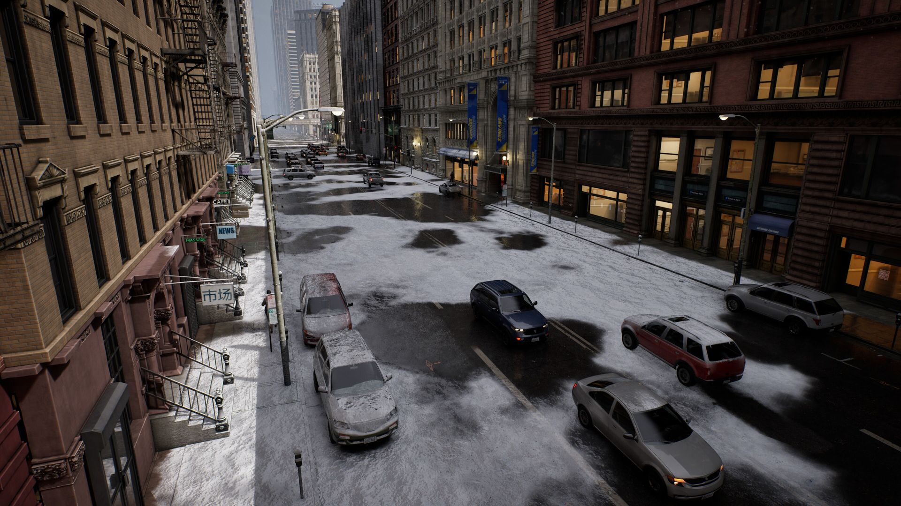
Labels from the simulation, not from annotators
Each object carries an oriented 3D box with its eight corners in world, camera and image coordinates, the projected and visible 2D boxes, truncation, and a visible fraction measured against the depth buffer. Every frame stores the camera intrinsics and world-to-camera extrinsics. Objects are labeled out to 2 km, so traffic at the far end of a street canyon is included whenever a few of its pixels are visible.
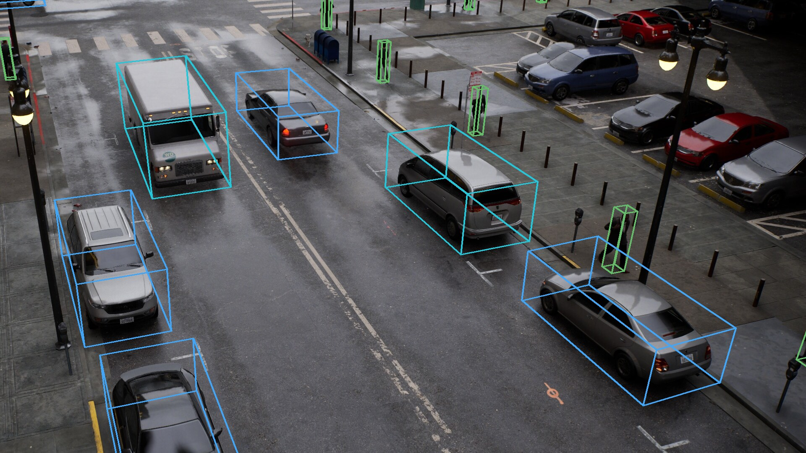
// labels/001335.json, one object
{
"label": "car",
"parked": false,
"distance_m": 33.26,
"center": [31334.47, -253787.93, 151.93],
"extent": [239.44, 105.5, 87.58],
"rotation": [0.39, 118.5, 0.9],
"corners_camera": [[-8.07, -5.86, 34.50], ...],
"corners_image": [[1396.55, 700.24], ...],
"bbox_2d": [1237.83, 588.42, 1458.64, 827.44],
"bbox_2d_visible": [1240, 588.42, 1456, 826],
"truncation": 0.0,
"visible_fraction": 1.0,
"occlusion": 0
}The format, coordinate conventions and corner order are documented in the annotation reference. Exporters for COCO and YOLO ship with the Python package.
Cameras where cities put them
Poses come from the road network: traffic signal and street light poles at intersections and mid-block, second and third floor facade windows, and freeway gantries. Each pose is tested against the scene geometry and rejected when the view is blocked, too close to a surface or mostly sky.
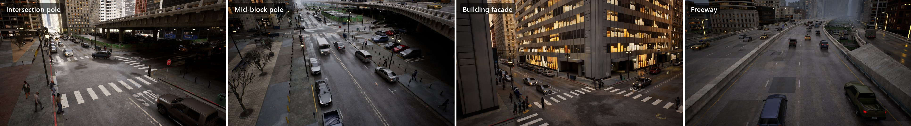
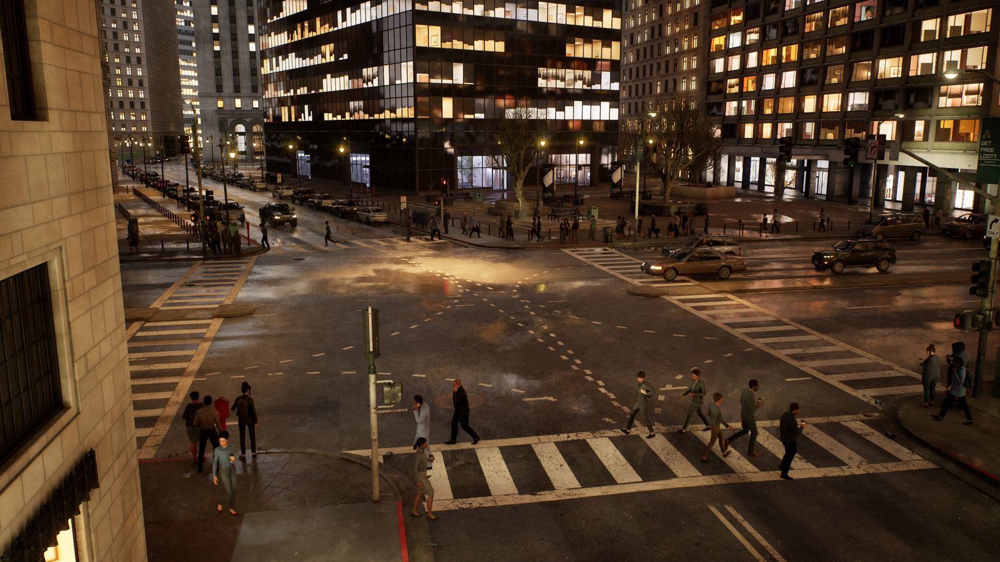
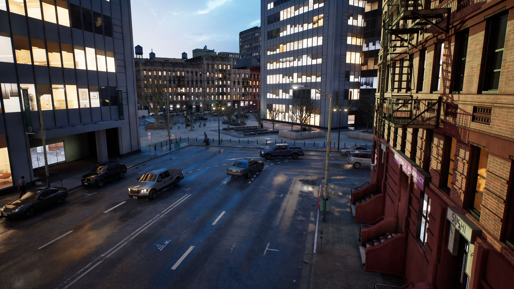
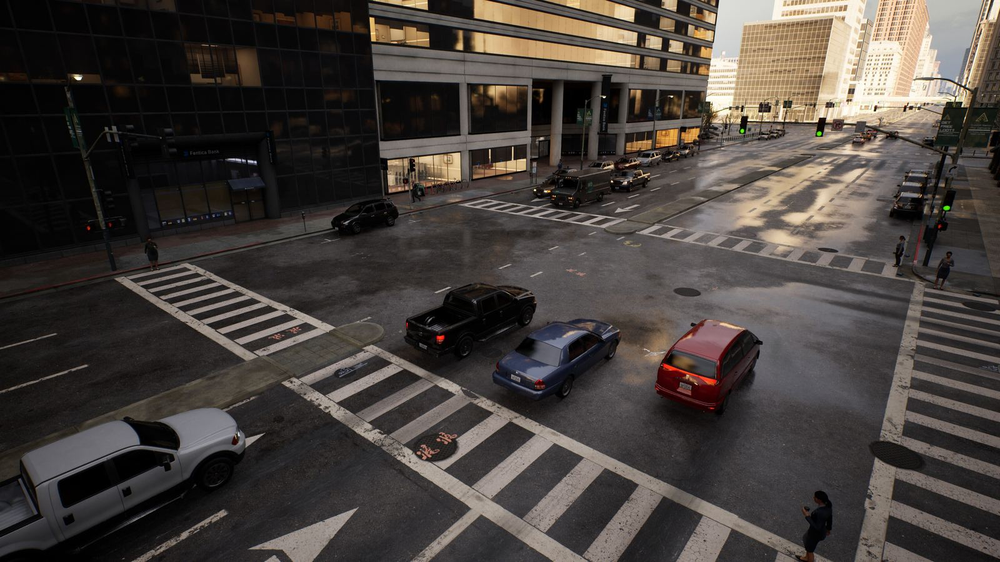
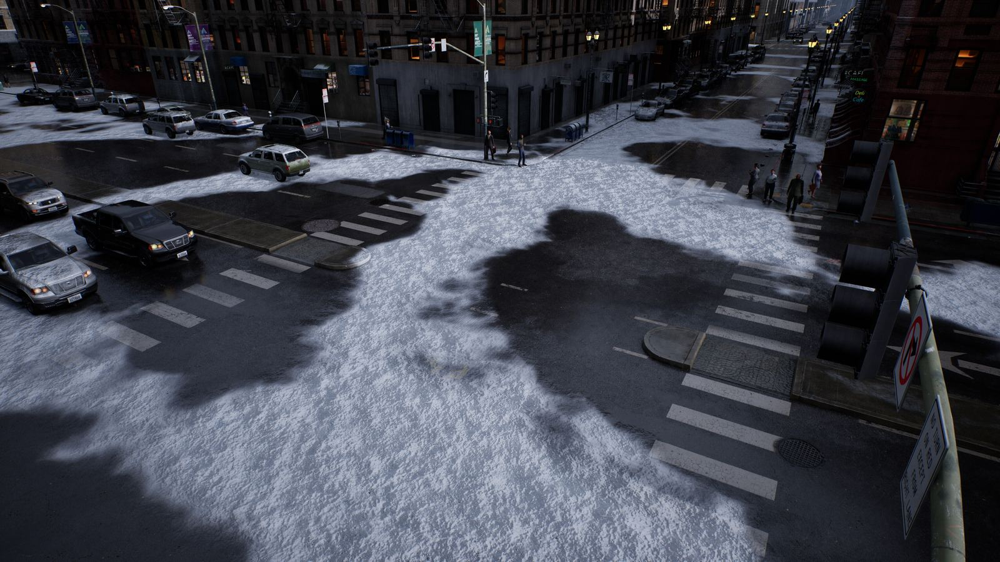
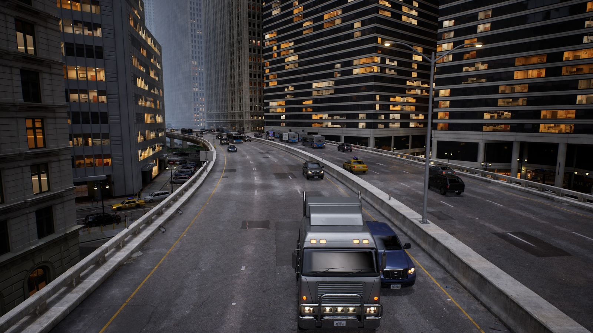
Generate your own
The simulator ships as a Windows application. The Python client drives it over TCP and depends only on the standard library. The script that produced the released dataset runs unattended at about 1,500 frames per hour at 4K on an RTX 4080, resumes after interruptions and restarts the simulator on its own.
Reproduce Boundless Big City 4K
python examples/collect_dataset.py \
--out C:/data/boundless_bigcity_4k \
--target 10000 \
--launch C:/Boundless/Boundless.exe
python tools/finalize_dataset.py \
C:/data/boundless_bigcity_4kDrive the simulator from Python
from boundless import Client
with Client("127.0.0.1", 2000) as client:
client.wait_until_ready()
client.set_lighting(sun_elevation=12, sun_azimuth=250)
client.set_weather(rain=0.4)
client.set_density(traffic=1.2, respawn=True)
pose = client.sample_camera_poses(n=1, kinds=["intersection"])[0]
client.set_camera(pose)
client.wait_until_settled()
shot = client.capture(output_dir="C:/data/demo")Datasets
Both datasets are hosted on Hugging Face.
Boundless Big City 4K
Infrastructure camera views of the Big City map at 3840×2160 across sunny, low sun, overcast, rain, snow, dusk, night and night rain conditions, with full 2D and 3D labels.
| Frames | 10,000 |
| Camera poses | 3,332 at 211 sites |
| Labeled objects | 467,619 |
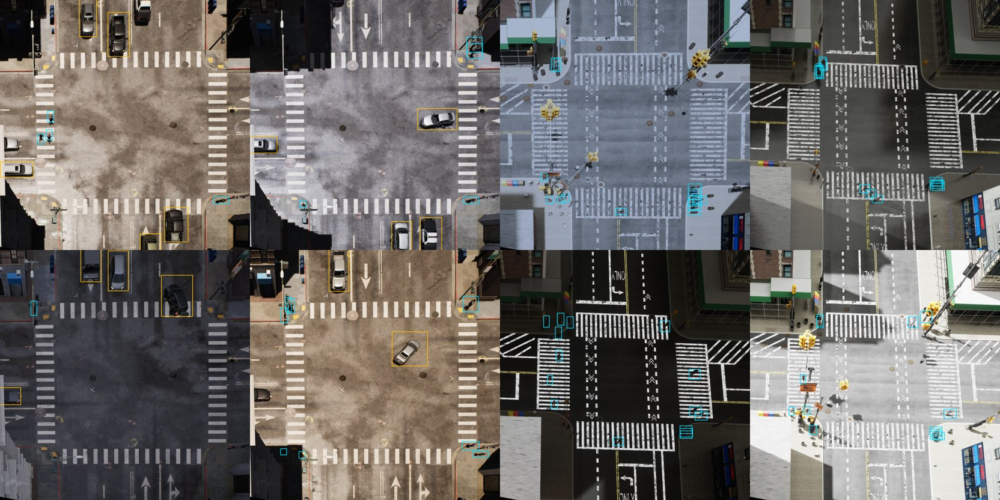
Boundless I2X
Top-down intersection views at 832×832 in the format of the Constellation dataset, whose real test set serves as the validation split for synthetic-to-real evaluation.
| Synthetic training frames | 16,698 |
| Real validation frames | 3,084 |
| Labeled objects | 218,011 |
Citation
@article{turkcan2024boundless,
title = {Boundless: Generating Photorealistic Synthetic Data for Object Detection in Urban Streetscapes},
author = {Turkcan, Mehmet Kerem and Li, Yuyang and Zang, Chengbo and Ghaderi, Javad and Zussman, Gil and Kostic, Zoran},
journal = {arXiv preprint arXiv:2409.03022},
year = {2024}
}